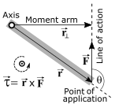
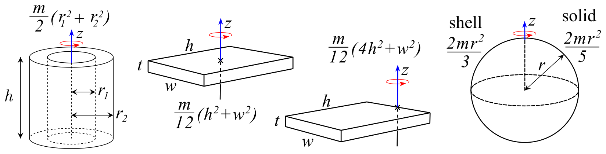
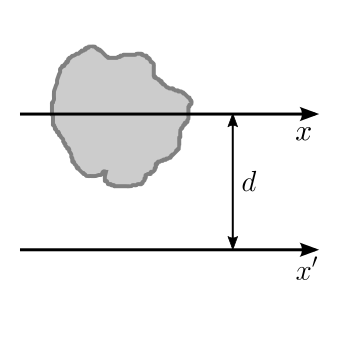
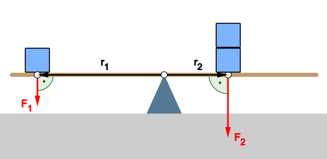
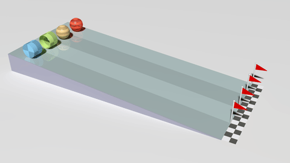
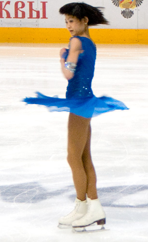
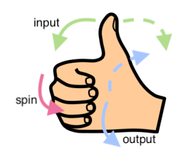

1. Peta materi
Dinamika rotasi bukan cabang yang berdiri sendiri. Ia dibangun di atas tiga modul sebelumnya dengan cara mengganti setiap besaran translasi menjadi pasangan besaran rotasinya.
MODUL 01 — HUKUM NEWTON
m -> I (massa -> momen inersia)
F -> tau (gaya -> torsi)
a -> alpha (percepatan -> percepatan sudut)
Sum F = m a -> Sum tau = I alpha
MODUL 02 — USAHA DAN ENERGI
W = F s -> W = tau theta
EK = 1/2 m v^2 -> EK rot = 1/2 I omega^2
P = F v -> P = tau omega
MODUL 03 — IMPULS DAN MOMENTUM
p = m v -> L = I omega
I = delta p -> Sum tau ext = delta L
ALUR UTAMA MODUL INI
GAYA
|
| bekerja pada jarak r dari sumbu
v
TORSI = r F sin theta
|
| hasilnya menentukan
v
PERCEPATAN SUDUT
|
| dibatasi oleh
v
MOMEN INERSIA = jumlah m r kuadrat
|
v
GERAK ROTASI
Cabang energi:
torsi -> kerja rotasi -> energi kinetik rotasi
Cabang momentum:
torsi -> perubahan momentum sudut
-> kekekalan momentum sudut
Cabang kesetimbangan:
Sum F = 0 DAN Sum tau = 0Bab ini selesai pada tiga tujuan. Pertama, memahami mengapa setiap besaran translasi memiliki pasangan besaran rotasi. Kedua, mampu menghitung torsi, momen inersia, dan percepatan sudut untuk benda yang nyata. Ketiga, mampu memilih persamaan yang tepat untuk setiap jenis soal rotasi.
2. Tujuan pembelajaran
Setelah mengikuti modul ini, kemampuan yang diharapkan adalah sebagai berikut.
| No | Tujuan | Indikator pencapaian |
|---|---|---|
| 1 | Menjelaskan pengertian rotasi dan dinamika rotasi | Membedakan gerak translasi dan rotasi serta menyebut contoh keduanya |
| 2 | Menggunakan besaran sudut | Menghitung posisi sudut, kecepatan sudut, dan percepatan sudut |
| 3 | Menghubungkan besaran linear dan sudut | Menerapkan s = r theta, v = r omega, dan a = r alpha |
| 4 | Menghitung torsi | Menentukan torsi dari gaya, lengan gaya, dan sudut antara gaya dengan lengan gaya |
| 5 | Menerapkan Hukum II Newton untuk rotasi | Menentukan percepatan sudut dari resultan torsi dan momen inersia |
| 6 | Menentukan momen inersia | Menggunakan rumus momen inersia bentuk baku dan teorema sumbu sejajar |
| 7 | Memeriksa kesetimbangan benda tegar | Menyusun syarat Sum F = 0 dan Sum tau = 0 secara bersamaan |
| 8 | Menghitung energi pada gerak rotasi | Menghitung kerja rotasi, energi kinetik rotasi, dan energi benda menggelinding |
| 9 | Menerapkan kekekalan momentum sudut | Menghitung perubahan kecepatan sudut akibat perubahan momen inersia |
| 10 | Menentukan arah besaran rotasi | Menerapkan aturan tangan kanan pada omega, L, dan tau serta memahami efek giroskopik |
| 11 | Memilih persamaan yang tepat | Menentukan persamaan yang sesuai untuk setiap jenis soal rotasi |
3. Kedudukan materi terhadap modul sebelumnya
Empat modul Fisika Dasar sekarang dapat dilihat sebagai satu rangkaian yang konsisten. Setiap modul menjawab pertanyaan berbeda tentang perubahan gerak, tetapi menggunakan struktur yang sama.
| Modul | Pertanyaan yang dijawab | Persamaan utama | Sisi yang dibahas |
|---|---|---|---|
| Hukum Newton | Bagaimana gaya menghasilkan percepatan? | Sum F = m a | Percepatan |
| Usaha dan Energi | Bagaimana kerja mengubah energi kinetik? | W = delta EK | Energi |
| Impuls dan Momentum | Bagaimana gaya selama waktu mengubah momentum? | Impuls = delta p | Momentum |
| Dinamika Rotasi | Bagaimana torsi menghasilkan percepatan sudut? | Sum tau = I alpha | Sudut |
Perhatikan bahwa modul ini bukan pengulangan modul sebelumnya dengan lambang yang diganti. Ada satu perbedaan penting: pada translasi, besaran yang menentukan kelambatan adalah massa, sedangkan pada rotasi yang menentukan adalah momen inersia. Momen inersia tidak hanya bergantung pada massa, tetapi juga pada jarak seluruh massa terhadap sumbu putar. Karena itu, dua benda dengan massa sama dapat memiliki perilaku rotasi yang sangat berbeda.
4. Apa yang dimaksud dengan rotasi
Rotasi adalah gerak berputar terhadap suatu sumbu. Sumbu putar dapat berupa garis tetap yang menembus benda, garis yang melekat pada benda, maupun titik yang menjadi pusat putaran.
| Objek | Sumbu putar | Catatan |
|---|---|---|
| Roda sepeda | Garis melalui pusat roda | Menggelinding di tanah |
| Kipas angin | Garis melalui poros | Dipasang pada dinding |
| Pintu pada engsel | Garis engsel vertikal | Sumbu berada di tepi |
| Roda gigi | Garis porosnya | Bergulir pada roda lain |
| Turbin | Poros turbin | Diputar oleh aliran fluida |
| Bumi | Garis kutub bumi | Satu putaran sekitar 24 jam |
| Cakram yang diputar | Sumbu melalui pusat | Ditahan tangan pada porosnya |
| Kendaraan di tikungan | Garis vertikal di pusat lintasan | Menggelinding dengan slip sangat kecil |
Perlu dibedakan antara rotasi murni dan gerak gabungan. Roda yang berputar pada poros tetapnya mengalami rotasi saja. Roda yang berjalan di jalan mengalami dua gerakan sekaligus: pusat massanya berpindah dan benda itu juga berputar. Gabungan kedua gerak ini akan dibahas khusus pada bagian energi kinetik benda yang menggelinding.
5. Apa yang dimaksud dengan dinamika rotasi
Dinamika mempelajari penyebab perubahan gerak. Dinamika rotasi dengan demikian mempelajari bagaimana gaya menghasilkan perubahan gerak rotasi suatu benda.
TRANSLASI
resultan gaya -> percepatan linear -> perubahan kecepatan linear
ROTASI
resultan torsi -> percepatan sudut -> perubahan kecepatan sudutBentuk paling sederhana dari dinamika translasi adalah Hukum II Newton:
Sum F = m aUntuk rotasi terhadap sumbu tetap, pasangan langsungnya adalah:
Sum tau = I alphaKedua persamaan ini memiliki struktur yang identik. Resultan gaya menentukan percepatan linear melalui massa, sedangkan resultan torsi menentukan percepatan sudut melalui momen inersia. Karena struktur keduanya identik, setiap konsep yang sudah dikuasai pada translasi dapat langsung ditransfer ke rotasi.
Sumbu tetap berarti sumbu putar yang tidak berubah posisi dan arah selama analisis. Kebanyakan soal rotasi dalam modul ini memakai sumbu tetap, misalnya poros roda yang ditahan oleh bantalan. Kasus sumbu yang ikut bergerak memerlukan analisis yang lebih lanjut dan tidak dibahas di sini.
6. Translasi dan rotasi sebagai pasangan besaran
Hubungan translasi dan rotasi bukan sekadar kemiripan bentuk rumus. Hubungan tersebut merupakan pasangan konsep yang dipakai bersama untuk menganalisis gerak rotasi.
| Besaran translasi | Pasangan rotasi | Satuan SI |
|---|---|---|
| Posisi x | Posisi sudut theta | meter; radian |
| Kecepatan v | Kecepatan sudut omega | meter per sekon; radian per sekon |
| Percepatan a | Percepatan sudut alpha | meter per sekon kuadrat; radian per sekon kuadrat |
| Massa m | Momen inersia I | kilogram; kilogram meter kuadrat |
| Gaya F | Torsi tau | newton; newton meter |
| Momentum p = m v | Momentum sudut L = I omega | kilogram meter per sekon; kilogram meter kuadrat per sekon |
| Sum F = m a | Sum tau = I alpha | newton; newton meter |
| EK = 1/2 m v^2 | EK rot = 1/2 I omega^2 | joule |
Satuan momen inersia dan satuan torsi berbeda dari pasangan translasinya meskipun bentuk rumusnya sama. Momen inersia bernilai kilogram meter kuadrat, sedangkan massa bernilai kilogram. Torsi bernilai newton meter, sedangkan gaya bernilai newton. Perbedaan satuan ini muncul karena jarak harus ikut diperhitungkan.
7. Posisi sudut
Posisi sudut adalah besaran yang menyatakan sejauh mana benda telah berputar. Dilambangkan dengan theta dan diukur dalam radian.
theta = posisi sudut [rad]
satu putaran penuh : 2 pi rad = 360 derajat
setengah putaran : pi rad = 180 derajat
seperempat putaran : pi/2 rad = 90 derajatRadian merupakan satuan sudut yang membuat rumus gerak rotasi tetap sederhana. Jika sudut dinyatakan dalam derajat, faktor pi harus disisipkan secara manual pada hampir setiap rumus. Karena itu, setiap kali menulis theta dalam rumus rotasi, sudut harus dinyatakan dalam radian.
Radian adalah sudut yang dibentuk oleh busur lingkaran dengan panjang busur sama dengan jari-jarinya. Pada lingkaran berjari-jari satu satuan, panjang busur sama dengan besar sudut dalam radian. Satuan radian bersifat tanpa dimensi, tetapi secara teknis tetap diberi nama agar mudah ditulis dalam persamaan.
8. Kecepatan sudut
Kecepatan sudut menunjukkan seberapa cepat posisi sudut berubah terhadap waktu.
omega = delta theta per delta t (rata-rata)
omega = d theta per d t (sesaat)Semakin besar omega, semakin cepat benda berputar. Satu putaran penuh dalam satu sekon berarti omega sama dengan dua pi radian per sekon, yaitu sekitar 6,28 radian per sekon.
9. Percepatan sudut
Percepatan sudut menunjukkan seberapa cepat kecepatan sudut berubah terhadap waktu.
alpha = delta omega per delta t (rata-rata)
alpha = d omega per d t (sesaat)Sebuah kipas yang sedang berputar dengan kecepatan tetap memiliki alpha sama dengan nol. Kipas yang mulai dari keadaan diam lalu berputar semakin cepat memiliki alpha yang tidak nol pada fase percepatan tersebut.
omega konstan -> alpha = 0
omega berubah -> alpha tidak nol10. Kinematika rotasi
Karena posisi sudut, kecepatan sudut, dan percepatan sudut saling berhubungan melalui turunan, maka persamaan kinematika rotasi memiliki bentuk yang sama dengan persamaan kinematika translasi.
| Besaran | Translasi | Rotasi |
|---|---|---|
| Kecepatan | v = x per t | omega = theta per t |
| Percepatan | a = v per t | alpha = omega per t |
| Hubungan keduanya | v^2 = v awal^2 + 2 a s | omega^2 = omega awal^2 + 2 alpha theta |
| Posisi dari kecepatan | s = v awal t + 1/2 a t^2 | theta = omega awal t + 1/2 alpha t^2 |
| Posisi dari percepatan konstan | s = v t - 1/2 a t^2 | theta = omega t - 1/2 alpha t^2 |
11. Hubungan besaran linear dan besaran sudut
Untuk titik yang berada pada jarak r dari sumbu rotasi, berlaku hubungan langsung antara besaran linear pada titik tersebut dan besaran sudut benda.
posisi linear busur s = r theta
kecepatan linear v = r omega
percepatan tangensial a t = r alphaSudut theta pada ketiga rumus tersebut harus dinyatakan dalam radian.
Hubungan s = r theta hanya berlaku pada rotasi terhadap sumbu tetap, dan theta harus dalam radian. Untuk roda yang menggelinding di jalan, hubungan yang berlaku untuk kecepatan pusat massa adalah v = R omega, bukan s = r theta untuk setiap titik pada roda.
12. Contoh roda yang berputar pada poros tetap
Bayangkan sebuah roda berjari-jari 0,30 meter berputar pada poros tetapnya dengan kecepatan sudut 4 radian per sekon.
Semua titik pada roda memiliki kecepatan sudut yang sama, tetapi titik yang terletak lebih jauh dari poros mempunyai kecepatan linear lebih besar.
titik pada jarak 0,10 m : v = 0,10 x 4 = 0,40 m/s
titik pada jarak 0,20 m : v = 0,20 x 4 = 0,80 m/s
titik pada jarak 0,30 m : v = 0,30 x 4 = 1,20 m/s
titik tepat pada poros : v = 0| Jarak dari poros | Perhitungan | Kecepatan linear |
|---|---|---|
| 0,00 meter | 0,00 kali 4 | 0 m/s |
| 0,10 meter | 0,10 kali 4 | 0,40 m/s |
| 0,20 meter | 0,20 kali 4 | 0,80 m/s |
| 0,30 meter | 0,30 kali 4 | 1,20 m/s |
Ujung roda yang paling jauh dari poros bergerak paling cepat, sementara titik tepat pada poros tidak bergerak sama sekali. Inilah alasan tepi piring giling lebih cepat aus daripada bagian pusatnya.
13. Apa itu torsi
Torsi adalah ukuran kemampuan gaya untuk menghasilkan atau mengubah rotasi terhadap suatu sumbu. Torsi mengukur efektivitas gaya, bukan besar gaya itu sendiri.
tau = F l (lengan gaya sudah tegak lurus)
tau = torsi [N m]
F = gaya [N]
l = lengan gaya [m]Satuan torsi adalah newton meter. Karena newton sama dengan kilogram meter per sekon kuadrat, satuan torsi dapat juga ditulis kilogram meter kuadrat per sekon kuadrat.
Konsep kunci yang harus dipahami sejak awal adalah bahwa torsi bukan gaya. Gaya bekerja pada benda dan menghasilkan percepatan linear, sedangkan torsi bekerja terhadap sumbu dan menghasilkan percepatan sudut. Keduanya dapat muncul dari gaya yang sama, tetapi efeknya berbeda.
14. Mengapa pintu lebih mudah dibuka dari ujungnya
Bayangkan sebuah pintu dengan engsel di sisi kiri. Pintu dapat dibuka dengan dorongan tangan yang sama besar, tetapi hasilnya sangat berbeda bergantung pada tempat dorongan diberikan.
dorongan dekat engsel l sangat kecil -> tau sangat kecil
dorongan di tengah pintu l sedang -> tau sedang
dorongan di ujung pintu l besar -> tau besarJika tangan mendorong tepat pada garis engsel, maka lengan gaya sama dengan nol dan torsinya nol. Pintu tidak berputar sama sekali, berapa pun besarnya gaya yang diberikan. Jika dorongan diberikan di ujung pintu yang berlawanan dengan engsel, lengan gaya menjadi sebesar lebar pintu dan torsinya paling besar.
Pengertian ini memiliki penerapan langsung. Gagang putar roda mobil dibuat panjang dan jauh dari poros bukan karena gaya yang diperlukan besar, melainkan karena lengan gaya yang panjang menghasilkan torsi besar sehingga roda mudah diputar. Pintu yang letak engselnya jauh dari titik pegangan tangan akan terasa jauh lebih sulit dibuka dengan dorongan yang sama.

Perhatikan bahwa yang menentukan besar torsi bukan jarak terjauh, melainkan jarak tegak lurus antara sumbu dan garis kerja gaya. Jarak tegak lurus ini disebut lengan gaya. Bila titik gaya berada tepat pada sumbu, lengan gaya bernilai nol dan torsi bernilai nol meskipun gaya yang diberikan sangat besar.
15. Rumus torsi yang lebih umum
Rumus tau = F l sangat praktis apabila lengan gaya sudah diketahui. Bentuk yang lebih umum adalah:
tau = r F sin theta
tau = torsi
r = jarak dari sumbu ke titik penerapan gaya
F = besar gaya
theta = sudut antara arah r dan arah FDalam bentuk vektor, torsi ditulis sebagai hasil kali silang antara vektor posisi dan vektor gaya:
tau = r x FHasil kali silang menghasilkan vektor yang tegak lurus terhadap kedua vektor pembentuknya. Karena itu, torsi selalu tegak lurus terhadap bidang yang dibentuk oleh lengan gaya dan arah gaya. Arahnya dapat ditentukan dengan aturan tangan kanan, seperti dibahas pada bagian tersendiri.
16. Kapan torsi maksimum
Dari rumus tau = r F sin theta, torsi maksimum terjadi ketika theta sama dengan 90 derajat, karena sinus pada 90 derajat bernilai satu.
theta = 90 derajat -> sin = 1 -> tau = r F (maksimum)
theta = 60 derajat -> sin = 0,87 -> tau = 0,87 r F
theta = 30 derajat -> sin = 0,5 -> tau = 0,5 r F
theta = 0 derajat -> sin = 0 -> tau = 0 (nol)| Sudut theta | Nilai sin theta | Besar torsi | Efek rotasi |
|---|---|---|---|
| 0 derajat | 0 | 0 | Tidak ada rotasi |
| 30 derajat | 0,5 | Separuh nilai maksimum | Rotasi lemah |
| 60 derajat | 0,87 | 87 persen nilai maksimum | Rotasi kuat |
| 90 derajat | 1 | Nilai maksimum | Rotasi paling efektif |
| 180 derajat | 0 | 0 | Tidak ada rotasi |
Jadi gaya yang besar belum tentu menghasilkan torsi yang besar. Arah gaya dan jaraknya dari sumbu juga menentukan besar torsi. Inilah sebabnya saat mengukur atau memutar baut, kita selalu mencoba memberikan gaya yang tegak lurus terhadap lengan gaya.
17. Arah torsi dan konvensi tanda
Pada soal dua dimensi, arah torsi dapat dinyatakan melalui arah putaran. Konvensi tanda yang lazim dipakai adalah sebagai berikut.
berlawanan arah jarum jam -> diberi tanda positif (CCW)
searah jarum jam -> diberi tanda negatif (CW)Ketika terdapat beberapa gaya yang masing-masing menghasilkan torsi, torsi netto adalah jumlah bertanda dari seluruh torsi tersebut.
Sum tau = tau 1 + tau 2 + tau 3 + ...Jika torsi yang berlawanan arah jarum jam bernilai 6 newton meter dan torsi yang searah jarum jam bernilai 4 newton meter, maka torsi netto bernilai 2 newton meter dan arahnya berlawanan arah jarum jam.
Konvensi tanda yang dipilih tidak mengubah fisika, asalkan diterapkan konsisten. Beberapa buku teks memilih kebalikannya, yaitu searah jarum jam bernilai positif. Yang penting adalah konsisten pada seluruh perhitungan dalam satu soal.
18. Hukum II Newton untuk rotasi
Persamaan utama modul ini adalah:
Sum tau = I alphaDibandingkan dengan Hukum II Newton pada translasi:
Sum F = m aDari persamaan itu dapat langsung ditarik beberapa kesimpulan.
| Kondisi | Persamaan | Arti |
|---|---|---|
| Resultan torsi nol | Sum tau = 0 | Percepatan sudut sama dengan nol |
| Resultan torsi tidak nol | Sum tau tidak nol | Benda memiliki percepatan sudut |
| Torsi tetap, I tetap | alpha sebanding dengan tau | Torsi lebih besar menghasilkan alpha lebih besar |
| Torsi tetap, I berubah | alpha berbanding terbalik dengan I | Momen inersia besar memperlambat percepatan sudut |
Bentuk yang lebih langsung digunakan dalam soal adalah:
alpha = Sum tau per I19. Menentukan percepatan sudut
Diketahui sebuah cakram pejal bermassa 4 kilogram dengan jari-jari 0,20 meter mengalami torsi resultan sebesar 0,60 newton meter. Tentukan percepatan sudutnya.
I cakram pejal = 1/2 m R^2
= 1/2 x 4 x (0,20)^2
= 1/2 x 4 x 0,04
= 0,08 kg m^2
alpha = Sum tau per I
= 0,60 per 0,08
= 7,5 rad/s^2| Besaran | Simbol | Nilai |
|---|---|---|
| Massa cakram | m | 4 kg |
| Jari-jari cakram | R | 0,20 m |
| Resultan torsi | Sum tau | 0,60 N m |
| Momen inersia | I | 0,08 kg m^2 |
| Percepatan sudut | alpha | 7,5 rad/s^2 |
Jika torsi diperbesar menjadi tiga kali lipat dengan momen inersia tetap, percepatan sudut juga menjadi tiga kali lipat. Jika momen inersia diperbesar menjadi dua kali lipat dengan torsi tetap, percepatan sudut menjadi setengah.
20. Apa itu momen inersia
Pada gerak translasi, massa merupakan ukuran inersia benda. Pada rotasi, konsep yang setara adalah momen inersia.
I = momen inersia [kg m^2]
Definisi:
I = jumlah m r^2 untuk sekumpulan partikel
I = integral r^2 dm untuk benda kontinuMomen inersia menunjukkan seberapa sulit keadaan rotasi suatu benda diubah. Benda dengan momen inersia besar membutuhkan torsi yang lebih besar untuk mencapai percepatan sudut yang sama. Karena itu, momen inersia sering disebut ukuran inersia rotasi.
Perhatikan bahwa definisi tersebut tidak memuat bentuk benda secara langsung. Bentuk masuk melalui nilai jarak r yang berbeda untuk setiap bagian massa.
21. Mengapa jarak dikuadratkan
Persamaan I = jumlah m r kuadrat menunjukkan bahwa massa berpengaruh secara linear, sedangkan jarak terhadap sumbu berpengaruh secara kuadratik.
I sebanding dengan m (linear)
I sebanding dengan r^2 (kuadratik)Jika jarak suatu massa terhadap sumbu menjadi dua kali lipat, kontribusinya terhadap momen inersia menjadi empat kali lipat.
r -> 2 r
I awal = m (r)^2
I baru = m (2r)^2 = 4 m r^2
I baru = 4 kali I awalInilah alasan massa yang berada jauh dari sumbu sangat berpengaruh terhadap momen inersia. Menggeser sekecil apa pun massa itu menjauh dari sumbu akan meningkatkan momen inersia secara tidak proporsional.
22. Komidi putar sebagai contoh
Bayangkan sebuah komidi putar yang mula-mula kosong lalu ditempati anak-anak yang duduk mengelompok di pusat.
anak-anak di pusat
r kecil -> I kecil -> alpha besar -> mudah dipercepatKetika anak-anak pindah ke bagian paling luar, jarak mereka terhadap sumbu bertambah besar sehingga momen inersia ikut bertambah besar.
anak-anak di pinggiran
r besar -> I besar -> alpha kecil -> sulit dipercepatDengan torsi yang sama, kenaikan momen inersia menyebabkan penurunan percepatan sudut. Inilah sebabnya operator komidi putar menempatkan anak-anak di pinggiran setelah mulai berputar supaya perjalanan terasa lebih lambat dan lebih stabil.
23. Momen inersia berbagai bentuk benda
Momen inersia tidak hanya bergantung pada massa, tetapi juga pada bentuk benda dan pilihan sumbu rotasi. Beberapa hasil penting untuk benda homogen adalah sebagai berikut.
| Bentuk benda | Sumbu putar | Momen inersia |
|---|---|---|
| Cincin tipis atau hoop | Sumbu melalui pusat, tegak lurus bidang cincin | I = M R^2 |
| Cakram atau silinder pejal | Sumbu pusat, tegak lurus bidang cakram | I = 1/2 M R^2 |
| Cakram atau silinder pejal | Sumbu diameter, tegak lurus sumbu panjang | I = 1/4 M R^2 |
| Bola pejal | Sumbu melalui pusat | I = 2/5 M R^2 |
| Kulit bola tipis | Sumbu melalui pusat | I = 2/3 M R^2 |
| Batang tipis | Sumbu tegak lurus batang melalui pusat | I = 1/12 M L^2 |
| Batang tipis | Sumbu tegak lurus batang melalui ujung | I = 1/3 M L^2 |
| Balok persegi homogen | Sumbu melalui pusat, tegak lurus panjang balok | I = 1/12 M (a^2 + b^2) |
| Cincin tipis | Sumbu diameter yang melalui pusat | I = 1/2 M R^2 |
Nilai-nilai tersebut berlaku untuk benda homogen, yaitu benda yang massanya tersebar merata.
24. Gambar berbagai bentuk dan momen inersianya

Perhatikan bahwa dua bentuk dengan massa dan ukuran yang sama dapat memiliki momen inersia berbeda. Cincin tipis memiliki momen inersia terbesar di antara bentuk pada gambar tersebut karena seluruh massanya berada pada jarak maksimum dari sumbu. Sebaliknya, bola pejal memiliki momen inersia terkecil di antara kelompok bola karena massanya tersebar mendekati pusat.
Momen inersia setengah bola pejal terhadap sumbu yang melalui pusat bidang bertutupnya sama dengan 2 per 5 dari M R kuadrat. Nilai ini sering membingungkan karena sama dengan nilai bola pejal utuh, padahal hanya separuh massanya.
25. Momen inersia bergantung pada sumbu rotasi
Satu benda dapat mempunyai beberapa nilai momen inersia. Ambil contoh sebuah batang panjang yang homogen.
batang homogen, panjang L, massa M
sumbu melalui pusat batang : I = 1/12 M L^2
sumbu melalui salah satu ujung : I = 1/3 M L^2Pernyataan yang sama berlaku untuk bentuk lain. Cincin tipis yang diputar terhadap sumbu tegak lurus bidangnya memiliki momen inersia M R kuadrat, sedangkan terhadap sumbu diameter yang melalui pusat memiliki momen inersia setengah M R kuadrat.
Ketika mengerjakan soal rotasi, selalu periksa sumbu yang dimaksud. Ketika menentukan momen inersia yang keliru terhadap sumbu adalah kesalahan yang paling sering terjadi, karena hasilnya LOOKUP dapat terlihat masuk akal padahal salah.
26. Teorema sumbu sejajar
Jika momen inersia terhadap sumbu melalui pusat massa sudah diketahui, momen inersia terhadap sumbu lain yang sejajar dapat dihitung tanpa integral.
I = I CM + M d^2
I CM = momen inersia terhadap sumbu melalui pusat massa
M = massa total benda
d = jarak antara kedua sumbu yang sejajarPersamaan ini disebut teorema sumbu sejajar. Syaratnya hanya satu: kedua sumbu harus sejajar dan keduanya harus berupa sumbu simetri yang melalui pusat massa untuk satu di antaranya.

| Posisi sumbu | Jarak d dari pusat massa | Momen inersia |
|---|---|---|
| Melalui pusat batang | 0 | 1/12 M L^2 |
| Jarak L per 6 dari pusat | L/6 | 1/12 M L^2 + M L^2 per 36 |
| Jarak L per 4 dari pusat | L/4 | 1/12 M L^2 + M L^2 per 16 |
| Melalui salah satu ujung | L/2 | 1/3 M L^2 |
Perhatikan bahwa setiap perubahan posisi sumbu selalu menambah momen inersia. Menambah jarak sumbu dari pusat massa tidak pernah menurunkan nilai momen inersia.
27. Kesetimbangan benda tegar
Sebuah benda tegar disebut setimbang apabila tidak mengalami perubahan gerak translasi maupun perubahan gerak rotasi. Karena kedua jenis perubahan itu harus dicek, kesetimbangan benda tegar memiliki dua syarat yang harus dipenuhi sekaligus.
SYARAT PERTAMA — translasi
Sum F x = 0
Sum F y = 0
atau secara ringkas Sum F = 0
SYARAT KEDUA — rotasi
Sum tau = 0Walaupun syarat pertama saja terpenuhi, benda masih dapat berputar karena pasangan gaya yang garis kerjanya tidak berimpit. Benda tegar karena itu memerlukan kedua syarat, bukan hanya satu.
28. Dua gaya yang resultannya nol tetapi benda tetap berputar
Bayangkan sebuah batang yang diberi dua gaya sama besar dengan arah berlawanan, tetapi keduanya bekerja pada garis yang berbeda.
gaya ke atas F di ujung kiri
gaya ke bawah F di ujung kanan
translasi : F ke atas + F ke bawah = 0 -> Sum F = 0 -> syarat 1 terpenuhi
rotasi : kedua gaya menghasilkan torsi searah
Sum tau tidak nol -> syarat 2 tidak terpenuhi
HASIL: batang bergerak berputar ke arah torsi resultan| Pemeriksaan | Perhitungan | Hasil |
|---|---|---|
| Resultan gaya | F ke atas dikurangi F ke bawah | Nol |
| Resultan torsi | F lengan kiri ditambah F lengan kanan searah | Tidak nol |
| Pusat massa | Tidak bergerak karena resultan gaya nol | Tetap |
| Rotasi benda | Benda berputar karena torsi resultan tidak nol | Bercenderung berputar |
Contoh seperti ini muncul pada beberapa soal yang menyangkut kesetimbangan statis.
29. Jungkat-jungkit sebagai contoh torsi
Jungkat-jungkit merupakan contoh paling sederhana untuk memahami torsi. Misalkan seorang anak yang lebih berat duduk lebih dekat dengan titik tumpu, sedangkan anak yang lebih ringan duduk lebih jauh.
kesetimbangan : tau kiri = tau kanan
F1 r1 = F2 r2
gaya berasal dari berat : F = m g
m1 g r1 = m2 g r2
karena g sama pada kedua sisi
m1 r1 = m2 r2
Dari persamaan m1 r1 = m2 r2 dapat langsung disimpulkan bahwa anak yang lebih berat harus duduk lebih dekat dengan titik tumpu. Inilah sebabnya titik tumpu untuk jungkat-jungkit tidak pernah tepat di tengah bila kedua penyungganya berbeda berat.
Sekarang ambil contoh angka. Seorang anak bermassa 45 kilogram duduk pada jarak 1,2 meter dari titik tumpu. Di sisi lain terdapat anak bermassa 30 kilogram. Tentukan jarak yang harus ditempuh agar jungkat-jungkit setimbang.
m1 r1 = m2 r2
45 x 1,2 = 30 x r2
54 = 30 r2
r2 = 54 per 30
r2 = 1,8 m| Posisi | Massa | Jarak dari tumpu | Momen gaya |
|---|---|---|---|
| Sisi kiri | 45 kg | 1,20 m | 54 kg m |
| Sisi kanan | 30 kg | 1,80 m | 54 kg m |
Anak yang lebih ringan harus duduk lebih jauh, justru agar momen gaya dari kedua sisinya sama besar.
30. Mengapa titik acuan torsi sangat penting
Torsi selalu dihitung terhadap suatu titik atau sumbu. Kita bebas memilih titik tersebut, dan pilihan yang tepat dapat sangat menyederhanakan perhitungan.
Perhatikan bahwa bila suatu gaya bekerja tepat pada titik acuan yang dipilih, maka r bernilai nol dan torsinya bernilai nol. Gaya tersebut otomatis hilang dari persamaan torsi.
gaya yang tepat lewat titik acuan -> r = 0 -> tau = 0
gaya yang jauh dari titik acuan -> tau tidak nolPada soal tangga yang bersandar pada dinding, titik tumpu kaki tangga di tanah lazim dipakai sebagai titik acuan. Dengan pilihan itu, gaya normal dan gaya gesek di titik tumpu memiliki lengan gaya nol sehingga tidak perlu diketahui besarnya untuk persamaan torsi.
31. Pusat massa dan pusat gravitasi
Pusat massa adalah posisi rata-rata massa benda dengan pembobot massa masing-masing bagiannya. Bagi benda homogen yang berbentuk simetris, pusat massa berada di titik geometris pusat benda tersebut.
Pusat gravitasi adalah titik tempat berat total benda dapat dianggap terkonsentrasi untuk keperluan analisis. Dalam medan gravitasi yang cukup seragam, kedua titik ini berimpit secara praktis.
Pembedaan kedua titik ini penting pada benda yang sangat besar seperti bumi, di mana medan gravitasi tidak seragam. Bagi benda berukuran everyday seperti roda, batang, atau bola, perbedaan tersebut dapat diabaikan.
32. Stabilitas benda
Selain diam, kesetimbangan dapat dibedakan berdasarkan kestabilannya.
| Jenis | Perilaku setelah digeser sedikit | Contoh |
|---|---|---|
| Stabil | Benda cenderung kembali ke posisi awal | Bandul yang sedang berayun, kubus dengan alas lebar |
| Tidak stabil | Gangguan kecil membuat benda semakin menjauh | Boneka yang tidak dapat berdiri sendiri |
| Netral | Benda tetap setimbang pada posisi baru | Bola yang sedang meluncur pada bidang datar |
33. Hubungan stabilitas dengan pusat gravitasi
Syarat praktis kestabilan benda tegar adalah sebagai berikut: proyeksi vertikal pusat gravitasi harus masih berada di dalam daerah dasar tumpuan.
pusat gravitasi di atas dasar tumpuan -> stabil
pusat gravitasi tepat di tepi tumpuan -> batas netral
pusat gravitasi di luar tumpuan -> tidak stabilContohnya adalah tubuh manusia. Saat berdiri dengan kedua kaki rapat, daerah tumpuan menjadi sangat sempit sehingga mudah kehilangan keseimbangan. Ketika kedua kaki dirapatkan, pusat gravitasi dapat bergeser keluar dari daerah tumpuan, sedangkan ketika langkah dibuat lebih lebar, daerah tumpuan bertambah lebar sehingga lebih mudah mempertahankan keseimbangan.
| Posisi kaki | Lebar daerah tumpuan | Tingkat kestabilan |
|---|---|---|
| Kaki rapat | Sempit | Rentah |
| Kaki selebar bahu | Sedang | Sedang |
| Kaki melebar | Luas | Tinggi |
| Berdiri pada satu kaki | Sangat sempit | Sangat rendah |
34. Kerja dalam gerak rotasi
Pada gerak translasi, kerja dari gaya konstan adalah W = F s. Padanannya untuk rotasi adalah:
torsi konstan W = tau theta
torsi berubah W = integral tau d theta
theta harus dinyatakan dalam radianKarena satuan theta adalah radian, satuan hasil perkalian tau dengan theta adalah newton meter sama dengan joule, sehingga satuan usaha tetap terjaga.
35. Energi kinetik rotasi
Pada translasi energi kinetik adalah 1/2 m v kuadrat. Pada rotasi:
EK rot = 1/2 I omega^2Objek yang menyimpan energi kinetik rotasi dalam kehidupan sehari-hari sangat banyak, antara lain roda kendaraan, kipas angin, flywheel pada mesin, turbin, dan rotor motor listrik.
36. Mengapa energi rotasi bergantung pada momen inersia
Pada kecepatan sudut yang sama, benda dengan momen inersia lebih besar menyimpan energi kinetik rotasi lebih besar.
omega sama -> I naik -> EK rot naikInilah salah satu alasan flywheel dipakai untuk menyimpan energi mekanik. Cakram flywheel yang besar memiliki momen inersia yang besar sehingga dapat menyimpan energi rotasi yang besar pada kecepatan sudut yang relatif kecil.
Flywheel pada kendaraan listrik berfungsi menyediakan energi putar saat percepatan. Ketika pengereman berlangsung, energi rotasi flywheel dikembalikan ke motor sehingga dapat dimanfaatkan untuk cruise control atau penghematan energi.
37. Energi kinetik total benda yang menggelinding
Benda yang menggelinding melakukan dua gerakan sekaligus: pusat massanya bergerak, dan benda itu juga berputar. Karena itu energi kinetiknya merupakan jumlah dari dua komponen.
EK total = 1/2 m v^2 + 1/2 I omega^2
_______ _______
translasi rotasiBagian pertama adalah energi kinetik translasi pusat massa, sedangkan bagian kedua adalah energi kinetik rotasi. Keduanya harus selalu dihitung bersama untuk benda yang menggelinding.
Kesalahan yang sering terjadi adalah hanya menghitung 1/2 m v kuadrat. Akibatnya bagian energi rotasi terlewat dan hasil kecepatan menjadi terlalu besar. Untuk benda yang menggelinding, energi potensial yang hilang terbagi antara gerak translasi dan rotasi.
38. Menggelinding tanpa slip
Jika roda menggelinding tanpa tergelincir, berlaku hubungan antara kecepatan pusat massa dan kecepatan sudutnya.
v CM = R omega
a CM = R alphaKedua hubungan ini menghubungkan gerak pusat massa dengan gerak rotasi dan memungkinkan kedua komponen energi kinetik digabungkan menjadi satu persamaan.
39. Apa arti tanpa slip
Tanpa slip berarti titik kontak sesaat antara roda dan permukaan tidak mengalami gerak relatif sepanjang permukaan. Roda tidak meluncur di atas tanah.
v lebih besar dari R omega -> roda meluncur -> slip
v lebih kecil dari R omega -> roda menyeret -> slip
v sama dengan R omega -> menggelinding sempurna40. Apakah ada gesekan saat menggelinding
Pada kondisi menggelinding tanpa slip, gaya gesek statik dalam banyak kasus justru ada dan berperan menyediakan torsi yang diperlukan untuk memutar roda. Tanpa gesekan itu, roda hanya akan tergelincir turun tanpa berputar.

Meskipun gesekan tersebut ada, gaya gesek statik ideal pada titik kontak yang sesaat diam tidak melakukan kerja mekanik bersih, karena titik kontak itu sendiri tidak mengalami perpindahan relatif terhadap permukaan.
Karena itu harus dibedakan antara gesekan statis pada rolling ideal dan gesekan yang memang melakukan kerja. Kerusakan ban, hambatan udara, serta gesekan pada poros menyebabkan energi hilang dan tidak termasuk kategori gesekan statis ideal di titik kontak.
41. Mengapa bentuk benda menentukan kecepatan
Beberapa benda dilepaskan dari ketinggian yang sama dan menggelinding tanpa slip pada bidang miring. Energi potensial awal setiap benda sama, tetapi kecepatan akhirnya berbeda.
m g h = 1/2 m v^2 + 1/2 I omega^2
dengan omega = v per R
m g h = 1/2 m v^2 + 1/2 I v^2 per R^2Setelah disusun ulang, diperoleh bentuk yang memperlihatkan faktor bentuk:
v^2 = 2 g h per (1 + I per (m R^2))
___________
rasio I ___________ menentukan kecepatan
per (m R^2)Perhatikan bahwa massa m dan jari-jari R saling menghilangkan. Yang tersisa hanyalah cara massa itu tersebar terhadap sumbu. Benda dengan rasio I per m R kuadrat paling kecil berputar paling cepat.
42. Faktor bentuk dan urutan kecepatan
Nilai rasio I per m R kuadrat untuk beberapa bentuk baku adalah sebagai berikut.
| Bentuk | I per m R^2 | Percepatan a | Urutan |
|---|---|---|---|
| Bola pejal | 2/5 = 0,40 | 5/7 g sin theta = 0,714 g sin theta | 1 |
| Silinder pejal | 1/2 = 0,50 | 2/3 g sin theta = 0,667 g sin theta | 2 |
| Bola kulit tipis | 2/3 = 0,67 | 3/5 g sin theta = 0,600 g sin theta | 3 |
| Cincin tipis | 1 = 1,00 | 1/2 g sin theta = 0,500 g sin theta | 4 |
Jadi urutan benda yang mencapai dasar bidang miring terlebih dahulu adalah bola pejal, lalu silinder pejal, lalu bola kulit tipis, dan terakhir cincin tipis.
Hasil ini berlaku untuk benda homogen yang bergelinding tanpa slip. Untuk benda berongga yang isinya tidak ikut berputar, misalnya kaleng berisi air yang tidak ikut berputar bersama, nilai efektif momen inersia berbeda sehingga urutannya dapat berubah.
43. Rumus kecepatan benda menggelinding
Dari penurunan energi potensial menjadi energi kinetik translasi dan rotasi, diperoleh rumus kecepatan benda yang menggelinding tanpa slip.
v = akar dari ( 2 g h per (1 + I per (m R^2)) )Dari rumus ini dapat segera dibaca bahwa untuk bentuk dan kemiringan yang sama, semua bola pejal akan mencapai kecepatan yang sama dalam waktu yang sama, berapa pun massa dan radiusnya. Yang menentukan hanyalah sebaran massa terhadap radius.
44. Perbandingan silinder pejal dan cincin tipis
Ambil dua benda dengan massa dan jari-jari sama: silinder pejal dengan I sebesar setengah M R kuadrat, dan cincin tipis dengan I sebesar M R kuadrat.
rasio bentuk silinder pejal = 1/2
rasio bentuk cincin tipis = 1
karena 1 lebih besar dari 1/2
-> cincin lebih banyak energinya untuk rotasi
-> cincin lebih sedikit energinya untuk translasi
-> percepatan cincin lebih kecilPada bidang miring yang sama, cincin tipis memiliki percepatan lebih kecil dan tiba lebih lama dibandingkan silinder pejal.
45. Momentum sudut
Sekarang kita masuk ke bagian akhir modul ini, yaitu momentum sudut. Pada translasi momentum adalah p = m v. Pada rotasi:
L = I omega
L = momentum sudut
I = momen inersia
omega = kecepatan sudut
satuan : kg m^2/sSatuan momentum sudut adalah kilogram meter kuadrat per sekon. Momentum sudut merupakan besaran vektor, sehingga memerlukan arah selain besarannya.
| Aspek | Momentum linear | Momentum sudut |
|---|---|---|
| Simbol | p | L |
| Rumus | p = m v | L = I omega |
| Satuan SI | kg m/s | kg m^2/s |
| Sifat | Vektor | Vektor |
| Perubahan ditentukan oleh | Gaya | Torsi |
46. Bentuk umum momentum sudut
Untuk sebuah partikel, momentum sudut terhadap titik acuan tertentu ditulis:
L = r x p
karena p = m v
L = r x m vHasil kali silang menghasilkan vektor yang tegak lurus terhadap bidang yang dibentuk oleh r dan p. Untuk benda tegar yang berotasi terhadap sumbu yang sesuai, bentuk tersebut menyederhanakan menjadi L = I omega.
Bentuk L = r x p adalah bentuk yang paling umum dan berlaku untuk semua gerak, termasuk gerak pada lintasan yang tidak berbentuk lingkaran. Bentuk L = I omega merupakan bentuk yang lebih praktis untuk benda tegar yang berotasi terhadap sumbu simetri tertentu.
47. Hubungan torsi dan momentum sudut
Dalam bentuk umum, torsi netto adalah laju perubahan momentum sudut terhadap waktu.
tau net = d L per d t
pasangan translasinya:
F net = d p per d tDengan demikian terdapat dua pasangan yang selalu menyertai:
gaya <-> momentum
torsi <-> momentum sudutPerhatikan bahwa kedua persamaan tersebut berbentuk sama. Justru inilah alasan Hukum II Newton untuk rotasi dapat dituliskan sebagai persamaan differensial momentum sudut.
48. Kekekalan momentum sudut
Jika torsi eksternal netto yang bekerja pada sistem sama dengan nol, maka:
Sum tau eksternal = 0
-> d L per d t = 0
-> L tetap
-> L awal = L akhirUntuk sistem sederhana, hubungan ini dapat dituliskan sebagai:
I awal x omega awal = I akhir x omega akhirSyarat kekekalan momentum sudut menyerupai syarat kekekalan momentum linear, tetapi yang harus nol adalah torsi eksternal, bukan gaya eksternal.
49. Contoh orang yang berputar
Bayangkan seorang pemain seluncur yang sedang berputar dengan tangan terbuka. Ketika tangannya ditarik ke arah tubuh, jarak massa terhadap sumbu mengecil sehingga momen inersia juga mengecil.
sebelum : I besar -> omega kecil
sesudah : I kecil -> omega besar
I awal x omega awal = I akhir x omega akhir
Karena tidak ada torsi eksternal yang berarti, momentum sudut pemain itu tetap. Ketika tangannya ditarik, momen inersia berkurang sehingga kecepatan sudut otomatis meningkat untuk mengimbangi penurunan tersebut.
50. Mengapa tidak perlu torsi tambahan untuk berputar lebih cepat
Hal ini sering membingungkan. Pada pandangan pertama, untuk berputar lebih cepat seolah-olah diperlukan torsi yang lebih besar. Padahal tidak selalu demikian.
jika torsi eksternal hampir nol
-> I dan omega harus berkompensasi
I akhir lebih kecil dari I awal
-> omega akhir lebih besar dari omega awalEnergi kinetik rotasi dapat meningkat meskipun tidak ada torsi eksternal. Kenaikan itu berasal dari kerja internal yang dilakukan pemain seluncur ketika menggerakkan tubuhnya.
Kerja internal mengubah distribusi energi antara gerak translasi dan rotasi tanpa mengubah momentum sudut total. Momentum sudut tetap, tetapi energi kinetik dapat bertambah karena kerja otot. Inilah alasan teknik seluncur yang menarik lengan ke dekat tubuh dapat meningkatkan laju putar tanpa bantuan luar.
51. Aturan tangan kanan
Karena omega, L, dan tau merupakan besaran vektor, arahnya harus ditentukan. Untuk ketiga besaran tersebut dipakai aturan tangan kanan.
langkah:
1. renggangkan jari-jari tangan kanan
2. letakkan ibu jari searah arah putaran
3. jari-jari menggenggam sumbu
ibu jari -> arah omega
jari -> arah putaranJika arah putaran diketahui, arah omega dan L dapat langsung ditentukan. Untuk torsi, aturan tangan kanan diterapkan pada hasil kali silang antara r dan F, sehingga tangannya harus diarahkan dari r menuju F.

52. Giroskop dan efek giroskopik
Momentum sudut tidak hanya dipakai pada pemain seluncur. Contoh penting lainnya adalah giroskop, yaitu sistem berputar bermomentum sudut besar.
Ketika torsi diberikan pada sumbu yang tegak lurus terhadap arah putaran, yang berubah bukan besar momentum sudut melainkan arahnya. Akibatnya sumbu tersebut bergerak melingkar yang disebut presesi.
Contoh penerapannya antara lain sensor orientasi, navigasi, sistem stabilisasi orientasi, dan instrumen pesawat.
53. Presesi
Presesi adalah perubahan arah sumbu putar benda yang berputar ketika diberi torsi yang tegak lurus terhadap arah putaran itu sendiri.
piring yang tidak berputar -> jatuh ke samping
piring yang berputar -> berayun/mengitari sumbu vertikal
bukan besarnya L yang berubah
tetapi arahnya
arah L sebelum : ke atas
arah L sesudah : ke atas dan ke samping
perubahan L : mendatar dan tegak lurus arah L awal
perubahan L itu persis searah torsiLaju presesinya dapat dihitung dari hubungan turunan momentum sudut:
omega P = tau per (I omega sin theta)
atau bentuk sederhana untuk poros yang massanya terkumpul:
omega P = r M g per (I omega)Penurunan ini mengandaikan laju presesi jauh lebih kecil daripada kecepatan putaran, yaitu omega P jauh lebih kecil daripada omega. Jika kondisi ini dilanggar, ada komponen tambahan momentum sudut pada sumbu vertikal yang memunculkan gerakan naik turun kecil yang disebut nutasi.
54. Bumi sebagai giroskop
Bumi sendiri dapat diperlakukan sebagai giroskop raksasa. Momentum sudutnya sepanjang sumbu bumi dan arahnya menuju kutub langit utara yang berdekatan dengan Bintang Utara.
Bumi sebenarnya mengalami presesi yang sangat lambat, sekali setiap kurang lebih 26.000 tahun. Penyebabnya adalah torsi dari matahari dan bulan terhadap bentuk bumi yang tidak benar-benar bulat sempurna.
| Benda | Peran momentum sudut | Pengamatan |
|---|---|---|
| Bumi | Menentukan arah kutub langit | Presesi sekali sekitar 26.000 tahun |
| Teleskop antariksa | Menentukan arah orientasi instrumen | Menggunakan roda reaksi untuk koreksi |
| Jam gyroskopik kapal | Menjadi acuan arah saat kapal bergerak | Menjaga arah meskipun kapal berputar |
| Pesawat terbang | Menstabilkan arah pada tikungan | Mengarahkan sumbu ke arah yang dikehendaki |
| Rotor turbin | Menyimpan energi dan menstabilkan gerak | Menghilangkan gangguan sudut |
Pada teleskop antariksa, roda reaksi bekerja dengan prinsip kebalikannya. Untuk memutar orientasi wahana, roda reaksi justru dipercepat atau dihentikan sehingga menghasilkan torsi reaksi pada badan wahana.
55. Daya pada gerak rotasi
Pada translasi, daya dari gaya konstan adalah P = F v. Pada rotasi:
P = tau omegaPasangan ini mengikuti pola yang sama seperti pasangan lainnya.
F <-> tau
v <-> omega
-> F v <-> tau omegaKarena satuan tau adalah newton meter dan satuan omega adalah radian per sekon, hasil perkaliannya adalah newton meter per sekon sama dengan watt.
56. Contoh motor listrik
Motor listrik memberikan torsi sebesar 20 newton meter kepada poros yang berputar dengan kecepatan sudut 10 radian per sekon.
P = tau omega
P = 20 x 10
P = 200 wattInilah sebabnya spesifikasi motor sering mencantumkan dua besaran sekaligus, yaitu torsi dan kecepatan putar. Dengan mengetahui kedua besaran tersebut, besaran ketiga yaitu daya dapat langsung dihitung.
| Torsi | Kecepatan sudut | Daya | Catatan |
|---|---|---|---|
| 20 N m | 0 rad/s | 0 W | Motor berputar tanpa beban |
| 20 N m | 5 rad/s | 100 W | Kelajuan rendah |
| 20 N m | 10 rad/s | 200 W | Kelajuan sedang |
| 20 N m | 20 rad/s | 400 W | Kelajuan tinggi |
Pada motor listrik nyata, terdapat nilai torsi maksimum pada kecepatan nol yang disebut torsi macet. Justru pada kondisi itu daya yang dihasilkan nol karena kecepatan sudutnya nol, meskipun torsinya paling besar.
57. Hubungan torsi, momen inersia, dan percepatan sudut
Persamaan alpha = Sum tau per I memberikan tiga hubungan yang dapat ditinjau satu per satu.
| Kondisi | Hubungan | Akibat |
|---|---|---|
| Torsi diperbesar | tau naik | alpha naik, benda berputar makin cepat |
| Momen inersia diperbesar | I naik | alpha turun, benda makin sulit dipercepat |
| Torsi netto nol | Sum tau = 0 | alpha = 0, benda berputar dengan kecepatan tetap |
Hubungan ini merupakan padanan persis dari a = Sum F per m pada translasi.
58. Contoh kunci pas
Mengencangkan atau mengendurkan baut merupakan contoh nyata penggunaan torsi. Ambil contoh gaya sebesar 100 newton yang diberikan tegak lurus pada lengan kunci sepanjang 0,30 meter.
tau = F l
tau = 100 x 0,30
tau = 30 N mJika panjang kunci diperpanjang menjadi dua kali lipat menjadi 0,60 meter dengan gaya yang sama:
tau = 100 x 0,60
tau = 60 N mTorsinya menjadi dua kali lipat, padahal gaya yang digunakan tetap sama. Inilah sebabnya memperpanjang gagang kunci merupakan cara sederhana untuk membuka baut yang keras.
59. Contoh tangga pada dinding
Salah satu soal klasik adalah tangga yang bersandar pada dinding. Pada tangga terdapat gaya berat tangga, gaya berat orang, gaya normal dari tanah, gaya gesek dari tanah, dan gaya dari dinding.
FBD tangga:
-> gaya normal lantai N, ke atas, pada kaki tangga
-> gaya gesek lantai f, sepanjang lantai
-> gaya normal dinding Nd, mendatar, pada bagian atas tangga
-> gaya gesek dinding fd, sepanjang dinding
-> berat tangga Wt, melalui pusat batang
-> berat orang Wo, melalui posisi orang
persamaan yang harus dipenuhi:
Sum F x = 0
Sum F y = 0
Sum tau = 0Pada tiga persamaan ini hanya ada dua persamaan yang saling bebas. Karena itu, tidak semua gaya dapat dihitung tanpa informasi tambahan. Salah satu gaya perlu dianggap sebagai besaran yang tidak diketahui, lalu dipilih titik acuan yang menghilangkan gaya tersebut dari persamaan torsi.
Untuk penyederhanaan dalam soal tangga, titik tumpu kaki tangga di tanah lazim dijadikan titik acuan torsi. Dengan pilihan itu, gaya normal dan gaya gesek yang bekerja di titik tumpu memiliki lengan gaya nol sehingga tidak perlu diketahui nilainya.
60. Urutan mengerjakan soal dinamika rotasi
Ketika menemukan soal rotasi, jangan langsung mencari rumus. Ikuti urutan berikut agar tidak ada besaran yang terlewat.
| Langkah | Kegiatan | Tujuan |
|---|---|---|
| 1 | Tentukan benda yang dianalisis | Mengetahui sistem yang ditinjau |
| 2 | Tentukan sumbu rotasi | Menetapkan titik acuan torsi |
| 3 | Buat diagram gaya | Menghindari gaya yang terlewat |
| 4 | Tandai gaya, jarak, dan sudut | Menyiapkan data untuk setiap torsi |
| 5 | Hitung setiap torsi | Memakai tau = r F sin theta atau tau = F l |
| 6 | Tentukan tanda setiap torsi | Berlawanan arah jarum jam positif, searah jarum jam negatif |
| 7 | Pilih persamaan yang sesuai | Memisahkan kasus dinamika, kesetimbangan, energi, dan momentum |
| 8 | Periksa satuan hasil | Memastikan jawaban berada dalam satuan yang wajar |
61. Kapan menggunakan Sum F sama dengan m a
Gunakan persamaan translasi apabila yang dicari terutama berkaitan dengan:
- percepatan linear pusat massa,
- besar gaya, tegangan, atau gaya normal,
- gerak pusat massa pada benda yang menggelinding,
- besar gaya gesek pada kontak roda dan tanah.
Untuk benda tegar yang melakukan translasi sekaligus rotasi, kedua kelompok persamaan sering kali harus dipakai bersama-sama. Persamaan translasi menentukan gerak pusat massa, sedangkan persamaan rotasi menentukan gerak sudutnya.
62. Kapan menggunakan Sum tau sama dengan I alpha
Gunakan persamaan rotasi apabila:
- benda berotasi dan yang dicari percepatan sudut,
- gaya bekerja pada jarak tertentu dari sumbu,
- terdapat roda, cakram, katrol, batang, atau benda tegar,
- benda mengalami perubahan kecepatan sudut.
Sebelum memakainya, pastikan momen inersia I telah dihitung terhadap sumbu yang sama dengan sumbu yang dipakai saat menghitung torsi.
63. Kapan menggunakan Sum tau sama dengan nol
Gunakan persamaan ini ketika benda tegar berada dalam kesetimbangan rotasi. Perlu diingat bahwa persamaan torsi saja tidak cukup. Kesetimbangan benda tegar memerlukan:
Sum F = 0 DAN Sum tau = 0Pada benda yang hanya satu, persamaan torsi nol menentukan posisi titik tumpu atau titik gantung. Pada benda berupa batang dengan dua gaya saja, persamaan torsi nol menentukan posisi batang terhadap titik tumpu.
64. Kapan menggunakan energi rotasi
Gunakan rumus energi rotasi apabila persoalan berkaitan dengan:
- kecepatan sudut pada suatu ketinggian,
- perubahan energi kinetik akibat kerja torsi,
- benda yang menggelinding turun pada bidang miring,
- sistem yang bergerak dari satu ketinggian ke ketinggian lain tanpa torsi luar neto.
Untuk benda menggelinding tanpa slip, hubungan v = R omega memungkinkan translasi dan rotasi digabung menjadi satu persamaan energi. Metode ini sangat menguntungkan karena tidak perlu mencari gaya gesek secara terpisah.
65. Kapan menggunakan kekekalan momentum sudut
Gunakan hubungan L awal sama dengan L akhir apabila torsi eksternal neto terhadap sistem bernilai nol. Contoh penerapannya antara lain:
- pemain seluncur yang menarik lengan dan kakinya,
- orang yang duduk di kursi putar lalu ditutupkan lengannya,
- roda reaksi yang dikendalikan tanpa torsi luar yang berarti,
- sistem yang berputar lalu mengubah distribusi massanya.
Syarat yang harus dipastikan lebih dahulu adalah benar-benar tidak ada torsi eksternal yang berarti. Hambatan pada poros atau gesekan udara sekecil apa pun dapat membuat syarat ini tidak terpenuhi.
66. Kesalahan yang sering terjadi
| Kesalahan | Mengapa keliru | Perbaikan |
|---|---|---|
| Menyamakan torsi dengan gaya | Keduanya berbeda dimensi dan efek | Gaya bekerja pada benda, torsi bekerja terhadap sumbu |
| Menyamakan momen inersia dengan massa | Momen inersia bergantung pada jarak massa terhadap sumbu | Gunakan I = jumlah m r kuadrat atau rumus bentuk baku |
| Menganggap Sum F = 0 berarti setimbang | Kesetimbangan benda tegar juga menuntut torsi nol | Periksa kedua syarat sekaligus |
| Menganggap benda berputar pasti bertorsi neto | Benda dapat berputar dengan kecepatan sudut tetap | Sum tau = 0 menghasilkan omega tetap |
| Menghitung energi menggelinding hanya dari translasi | Bagian rotasi terlewat | Gunakan EK = 1/2 m v^2 + 1/2 I omega^2 |
| Menganggap momentum sudut selalu kekal | Kekekalan hanya berlaku tanpa torsi eksternal | Periksa syarat torsi eksternal neto nol |
| Menyulis theta dalam derajat pada rumus rotasi | Hasil rumus menjadi keliru secara faktor pi | Konversikan derajat ke radian terlebih dahulu |
| Menggunakan momen inersia terhadap sumbu yang keliru | Hasil tidak sesuai benda yang diamati | Periksa letak sumbu sebelum menghitung |
67. Tabel perbandingan lengkap translasi dan rotasi
| Translasi | Rotasi |
|---|---|
| Posisi x | Posisi sudut theta |
| v = d x per d t | omega = d theta per d t |
| a = d v per d t | alpha = d omega per d t |
| Massa m | Momen inersia I |
| Gaya F | Torsi tau |
| F = m a | tau = I alpha |
| Momentum p = m v | Momentum sudut L = I omega |
| 1/2 m v^2 | 1/2 I omega^2 |
| W = F s | W = tau theta |
| P = F v | P = tau omega |
68. Ringkasan rumus
| Konsep | Rumus |
|---|---|
| Posisi linear busur | s = r theta |
| Kecepatan linear | v = r omega |
| Percepatan tangensial | a t = r alpha |
| Percepatan sudut | alpha = delta omega per delta t |
| Torsi sederhana | tau = F l |
| Torsi umum | tau = r F sin theta |
| Torsi vektor | tau = r x F |
| Hukum II Newton rotasi | Sum tau = I alpha |
| Momen inersia partikel | I = jumlah m r kuadrat |
| Benda kontinu | I = integral r^2 dm |
| Teorema sumbu sejajar | I = I CM + M d^2 |
| Kesetimbangan translasi | Sum F = 0 |
| Kesetimbangan rotasi | Sum tau = 0 |
| Kerja rotasi | W = tau theta |
| Kerja rotasi umum | W = integral tau d theta |
| Energi kinetik rotasi | EK rot = 1/2 I omega^2 |
| Menggelinding tanpa slip | v = R omega |
| Energi benda menggelinding | EK = 1/2 m v^2 + 1/2 I omega^2 |
| Kecepatan benda menggelinding | v = akar dari 2 g h per (1 + I per m R^2) |
| Momentum sudut | L = I omega |
| Momentum sudut bentuk umum | L = r x p |
| Hubungan torsi dan momentum sudut | tau = d L per d t |
| Kekekalan momentum sudut | L awal = L akhir |
| Laju presesi | omega P = tau per I omega sin theta |
| Daya rotasi | P = tau omega |
69. Peta konsep seluruh materi
Cara termudah memahami seluruh bab adalah melihat alur hubungan antarkonsepnya.
GAYA
|
| bekerja pada jarak r dari sumbu
v
TORSI = r F sin theta
|
| resultedannya menentukan
v
PERCEPATAN SUDUT Sum tau = I alpha
|
| dibatasi oleh
v
MOMEN INERSIA = jumlah m r kuadrat
|
v
GERAK ROTASI
DALAM SUDUT PANDANG ENERGI
torsi -> kerja rotasi W = tau theta
-> energi kinetik rotasi EK = 1/2 I omega^2
bila benda menggelinding:
EK = 1/2 m v^2 + 1/2 I omega^2
DALAM SUDUT PANDANG MOMENTUM
torsi -> perubahan momentum sudut tau = d L per d t
-> kekekalan momentum sudut L awal = L akhir70. Contoh perhitungan torsi dan percepatan sudut
Sebuah cakram pejal bermassa 6 kilogram dengan jari-jari 0,25 meter berputar pada poros tetapnya. Sebuah gaya sebesar 12 newton diberikan melalui tali yang dililitkan pada tepi cakram sehingga arahnya tegak lurus terhadap jari-jari.
Data
m = 6 kg
R = 0,25 m
F = 12 N
gaya tegak lurus terhadap lengan gayaLangkah 1. Momen inersia
I = 1/2 m R^2
I = 1/2 x 6 x (0,25)^2
I = 3 x 0,0625
I = 0,1875 kg m^2Langkah 2. Torsi
tau = F R sin 90 derajat
tau = F R
tau = 12 x 0,25
tau = 3 N mLangkah 3. Percepatan sudut
Sum tau = I alpha
alpha = Sum tau per I
alpha = 3 per 0,1875
alpha = 16 rad/s^2| Besaran | Rumus | Hasil |
|---|---|---|
| Momen inersia | 1/2 m R^2 | 0,1875 kg m^2 |
| Torsi | F R | 3 N m |
| Percepatan sudut | Sum tau per I | 16 rad/s^2 |
Periksa satuan hasil. Momen inersia bernilai kilogram meter kuadrat, torsi bernilai newton meter, dan hasil perkalian keduanya menghasilkan kilogram meter kuadrat per sekon kuadrat yang setara dengan radian per sekon kuadrat.
71. Contoh perhitungan teorema sumbu sejajar
Sebuah batang homogen bermassa 8 kilogram dan panjang 1,2 meter. Momen inersia terhadap sumbu yang tegak lurus batang melalui pusat adalah 1 per 12 M L kuadrat. Tentukan momen inersia terhadap sumbu yang tegak lurus batang melalui salah satu ujung.
I CM = 1/12 M L^2
= 1/12 x 8 x (1,2)^2
= 1/12 x 8 x 1,44
= 0,96 kg m^2
teorema sumbu sejajar:
I = I CM + M d^2
jarak antara sumbu pusat massa dan sumbu ujung:
d = L per 2 = 1,2 per 2 = 0,6 m
I = 0,96 + 8 x (0,6)^2
I = 0,96 + 8 x 0,36
I = 0,96 + 2,88
I = 3,84 kg m^2| Pembanding | Perhitungan | Hasil |
|---|---|---|
| Teorema sumbu sejajar | 0,96 + 8 kali 0,36 | 3,84 kg m^2 |
| Rumus batang terhadap ujung | 1 per 3 kali 8 kali 1,44 | 3,84 kg m^2 |
Kedua cara memberikan hasil yang sama. Hasil tersebut juga masuk akal karena momen inersia terhadap ujung harus lebih besar daripada terhadap pusat.
72. Contoh perhitungan bola pejal yang menggelinding
Sebuah bola pejal bermassa 2 kilogram dengan jari-jari 0,15 meter dilepaskan dari keadaan diam pada ketinggian 1,8 meter di atas bidang miring. Bola menggelinding tanpa slip dan bidang miring dianggap licin sehingga hambatan udara diabaikan. Ambil g sebesar 9,8 meter per sekon kuadrat.
Langkah 1. Momen inersia bola pejal
I = 2/5 M R^2
I = 2/5 x 2 x (0,15)^2
I = 0,8 x 0,0225
I = 0,018 kg m^2Langkah 2. Rasio bentuk
I per (M R^2) = 2/5 = 0,4Langkah 3. Kecepatan di dasar bidang miring
v^2 = 2 g h per (1 + I per (M R^2))
v^2 = 2 x 9,8 x 1,8 per (1 + 0,4)
v^2 = 35,28 per 1,4
v^2 = 25,2 m^2/s^2
v = 5,02 m/sLangkah 4. Pemeriksaan energi
energi potensial awal : E p = M g h = 2 x 9,8 x 1,8 = 35,3 J
kecepatan sudut : omega = v per R = 5,02 per 0,15 = 33,5 rad/s
energi kinetik translasi: 1/2 M v^2 = 0,5 x 2 x 25,2 = 25,2 J
energi kinetik rotasi : 1/2 I omega^2 = 0,5 x 0,018 x 1120 = 10,1 J
total = 35,3 J| Komponen | Perhitungan | Jumlah | Porsi |
|---|---|---|---|
| Energi kinetik translasi | 1/2 dikali 2 dikali 25,2 | 25,2 J | 71 persen |
| Energi kinetik rotasi | 1/2 dikali 0,018 dikali 1120 | 10,1 J | 29 persen |
| Total energi kinetik | 25,2 ditambah 10,1 | 35,3 J | 100 persen |
Perhatikan bahwa bagian terbesar energi potensial berakhir menjadi energi kinetik translasi. Untuk bola pejal, porsi energi rotasi terhadap energi translasi selalu sebanding dengan rasio bentuk, yaitu 0,4 bagian rotasi untuk setiap 1 bagian translasi.
73. Contoh perhitungan momentum sudut
Sebuah platform putar merupakan cakram pejal yang sedang berputar dengan kecepatan sudut awal 4 radian per sekon. Seorang pemain seluncur yang sedang berputar menarik tangannya sehingga jari-jari efektifnya berubah dari 0,60 meter menjadi 0,30 meter. Dengan model sederhana massa orang dianggap terkumpul pada satu titik di ujung lengan.
Sebelum
I awal = M r awal^2 = M (0,60)^2 = 0,36 MSesudah
I akhir = M r akhir^2 = M (0,30)^2 = 0,09 MKekekalan momentum sudut
I awal omega awal = I akhir omega akhir
0,36 M x 4 = 0,09 M x omega akhir
1,44 M = 0,09 M omega akhir
omega akhir = 1,44 per 0,09
omega akhir = 16 rad/s| Besaran | Sebelum | Sesudah |
|---|---|---|
| Jari-jari efektif | 0,60 m | 0,30 m |
| Momen inersia | 0,36 M | 0,09 M |
| Kecepatan sudut | 4 rad/s | 16 rad/s |
| Momentum sudut | 1,44 M | 1,44 M |
Kecepatan sudut menjadi empat kali lipat, sementara momentum sudut tetap. Jari-jari efektif dikecilkan menjadi setengah, sehingga momen inersia menjadi seperempat dan kecepatan sudut menjadi empat kali lipat.
Momentum sudut dalam satuan kg m^2 per sekon pada contoh ini belum dapat dihitung karena nilai massa belum ditentukan. Yang dapat dipastikan adalah rasio perubahan, yaitu empat kali lipat. Pada perhitungan lengkap, nilai massa cukup dimasukkan pada kedua sisi sehingga saling menghilangkan.
74. Latihan
Kerjakan latihan berikut untuk memeriksa pemahaman terhadap materi modul ini.
| No | Pertanyaan | Jawaban ringkas |
|---|---|---|
| 1 | Tuliskan persamaan Hukum II Newton untuk rotasi. | Resultan torsi sama dengan momen inersia dikali percepatan sudut |
| 2 | Apa satuan posisi sudut? | Radian |
| 3 | Berapa nilai satu putaran penuh dalam radian? | Dua pi radian |
| 4 | Kenapa theta harus dinyatakan dalam radian pada rumus rotasi? | Agar rumus tetap sederhana tanpa faktor pi tambahan |
| 5 | Tuliskan rumus kecepatan linear dari kecepatan sudut. | Kecepatan linear sama dengan jarak dari poros dikali kecepatan sudut |
| 6 | Tuliskan rumus torsi umum. | Perkalian jarak, gaya, dan sinus sudut antara keduanya |
| 7 | Kapan torsi maksimum terjadi? | Ketika gaya tegak lurus terhadap lengan gaya |
| 8 | Mengapa dorongan dekat engsel tidak membuat pintu berputar? | Lengan gaya mendekati nol sehingga torsi mendekati nol |
| 9 | Apakah torsi sama dengan gaya? | Tidak, torsi adalah ukuran efek rotasi gaya |
| 10 | Tuliskan definisi momen inersia. | Jumlah massa dikali kuadrat jarak massa terhadap sumbu |
| 11 | Mengapa jarak masuk dengan kuadrat? | Karena kontribusi massa terhadap inersia rotasi naik kuadratik terhadap jarak |
| 12 | Tuliskan momen inersia cakram pejal terhadap sumbu pusat. | Setengah massa dikali kuadrat jari-jari |
| 13 | Tuliskan momen inersia bola pejal terhadap sumbu pusat. | Dua per lima massa dikali kuadrat jari-jari |
| 14 | Tuliskan momen inersia cincin tipis terhadap sumbu pusat. | Massa dikali kuadrat jari-jari |
| 15 | Tuliskan teorema sumbu sejajar. | Momen inersia sama dengan momen inersia pusat massa ditambah ditambah massa kali kuadrat jarak |
| 16 | Syarat apa saja untuk kesetimbangan benda tegar? | Resultan gaya nol dan resultan torsi nol |
| 17 | Mengapa resultan gaya nol belum menjamin kesetimbangan? | Pasangan gaya dapat menghasilkan torsi yang tidak nol |
| 18 | Bagaimana memilih titik acuan torsi yang menguntungkan? | Pilih titik yang menghilangkan sebanyak mungkin gaya tak diketahui |
| 19 | Syarat kestabilan benda tegar apa? | Proyeksi pusat gravitasi berada di dalam daerah dasar tumpuan |
| 20 | Tuliskan rumus kerja rotasi dengan torsi konstan. | Kerja sama dengan torsi dikali sudut putar |
| 21 | Tuliskan rumus energi kinetik rotasi. | Setengah momen inersia dikali kuadrat kecepatan sudut |
| 22 | Apa syarat benda menggelinding tanpa slip? | Kecepatan pusat massa sama dengan jari-jari dikali kecepatan sudut |
| 23 | Berapa rasio bentuk bola pejal? | Dua per lima |
| 24 | Benda berbentuk apa yang menggelinding paling lambat? | Cincin tipis |
| 25 | Tuliskan rumus kecepatan benda menggelinding. | Akar dari dua kali percepatan gravitasi kali tinggi dibagi satu ditambah rasio bentuk |
| 26 | Tuliskan rumus momentum sudut. | Momen inersia dikali kecepatan sudut |
| 27 | Apa satuan momentum sudut? | Kilogram meter kuadrat per sekon |
| 28 | Kapan momentum sudut kekal? | Ketika torsi eksternal netto bernilai nol |
| 29 | Mengapa pemain seluncur berputar lebih cepat saat menarik tangan? | Momen inersia berkurang sementara momentum sudut tetap |
| 30 | Bagaimana menentukan arah vektor kecepatan sudut? | Dengan aturan tangan kanan |
| 31 | Apakah momentum sudut kekal saat lengan ditarik? | Ya, selama torsi eksternal dapat diabaikan |
| 32 | Apa itu presesi? | Perubahan arah sumbu putar akibat torsi tegak lurus arah putaran |
| 33 | Tuliskan rumus daya rotasi. | Perkalian torsi dengan kecepatan sudut |
| 34 | Mengapa motor listrik tanpa beban memiliki daya nol? | Karena kecepatan sudutnya nol sehingga hasil perkaliannya nol |
| 35 | Apa akibat memperpanjang lengan kunci pas? | Torsi menjadi lebih besar dengan gaya yang sama |
| 36 | Kapan persamaan translasi dan rotasi dipakai bersama? | Pada benda tegar yang menggelinding, persamaan translasi menentukan gerak pusat massa dan persamaan rotasi menentukan gerak sudut |
75. Daftar istilah
- Rotasi
- Gerak berputar terhadap suatu sumbu.
- Dinamika rotasi
- Cabang mekanika yang mempelajari bagaimana gaya menghasilkan perubahan gerak rotasi suatu benda.
- Sumbu tetap
- Sumbu putar yang tidak berubah posisi dan arah selama analisis.
- Posisi sudut
- Besaran yang menyatakan sejauh mana benda telah berputar, diukur dalam radian.
- Kecepatan sudut
- Laju perubahan posisi sudut terhadap waktu.
- Percepatan sudut
- Laju perubahan kecepatan sudut terhadap waktu.
- Hubungan linear dan sudut
- Pasangan besaran yang menghubungkan gerak titik pada radius r dengan gerak sudut benda, seperti v = r omega.
- Torsi
- Ukuran kemampuan gaya untuk menghasilkan atau mengubah rotasi terhadap suatu sumbu.
- Lengan gaya
- Jarak tegak lurus antara sumbu putar dan garis kerja gaya.
- Hasil kali silang
- Operasi vektor yang menghasilkan vektor tegak lurus terhadap kedua vektor pembentuknya.
- Momen inersia
- Ukuran inersia rotasi benda, bernilai jumlah massa dikali kuadrat jarak massa terhadap sumbu.
- Teorema sumbu sejajar
- Hubungan untuk mencari momen inersia terhadap sumbu sejajar yang lain dari momen inersia melalui pusat massa.
- Benda tegar
- Benda yang tidak mengalami perubahan bentuk saat dikenai gaya.
- Kesetimbangan statis
- Kondisi ketika resultan gaya nol dan resultan torsi nol sehingga benda diam atau bergerak dengan kecepatan tetap.
- Pivot
- Titik yang dipakai sebagai titik acuan perhitungan torsi.
- Pusat massa
- Posisi rata-rata massa benda dengan pembobot massa masing-masing bagiannya.
- Pusat gravitasi
- Titik tempat berat total benda dapat dianggap terkonsentrasi untuk keperluan analisis.
- Kesetimbangan stabil
- Keadaan setimbang yang cenderung kembali ke posisi awal setelah digeser sedikit.
- Kesetimbangan tidak stabil
- Keadaan setimbang yang justru menjauh dari posisi awal setelah digeser sedikit.
- Kesetimbangan netral
- Keadaan setimbang yang tetap bertahan pada posisi baru setelah digeser.
- Daerah dasar tumpuan
- Daerah yang dibentuk oleh titik-titik tumpuan, syarat kestabilan benda tegar.
- Kerja rotasi
- Hasil perkalian torsi dengan sudut putar, dihitung dalam radian.
- Energi kinetik rotasi
- Energi akibat gerak rotasi benda, bernilai setengah momen inersia dikali kuadrat kecepatan sudut.
- Flywheel
- Roda geser yang sengaja dibuat bermomen inersia besar untuk menyimpan energi kinetik rotasi.
- Menggelinding tanpa slip
- Kondisi saat titik kontak sesaat antara benda menggelinding dan permukaan tidak mengalami gerak relatif.
- Rasio bentuk
- Nilai I per M R^2 yang menentukan percepatan benda yang menggelinding pada bidang miring.
- Momentum sudut
- Besaran vektor yang menyatakan ukuran gerak rotasi, bernilai momen inersia dikali kecepatan sudut.
- Kekekalan momentum sudut
- Prinsip bahwa momentum sudut sistem tetap apabila torsi eksternal nettonya nol.
- Aturan tangan kanan
- Aturan untuk menentukan arah vektor hasil kali silang, seperti arah kecepatan sudut dan momentum sudut.
- Giroskop
- Sistem berputar bermomentum sudut besar yang arah sumbunya relatif stabil.
- Presesi
- Perubahan arah sumbu putar benda yang berputar akibat torsi tegak lurus terhadap arah putaran.
- Nutas
- Gerakan naik turun kecil pada sumbu benda yang mengalami presesi.
- Roda reaksi
- Roda pada wahana yang dipercepat atau dihentikan untuk menghasilkan torsi pada badan wahana.
- Konvensi tanda
- Aturan penentuan tanda besaran, misalnya berlawanan arah jarum jam bernilai positif pada perhitungan torsi.
76. Daftar pustaka
Daftar pustaka disusun dari materi utama kuliah, buku teks, dan sumber gambar yang dipakai pada modul ini.
77. Daftar sumber gambar
| Gambar | Berkas | Pembuat | Lisensi |
|---|---|---|---|
| Gambar 1. Diagram torsi dan lengan gaya | Torque lever arm with point of application and line of action | Guy vandegrift | CC BY-SA 4.0 |
| Gambar 2. Bentuk dasar momen inersia | Five basic moments of inertia | Guy vandegrift | CC BY-SA 4.0 |
| Gambar 3. Teorema sumbu sejajar | Parallel axis theorem | IngenieroLoco | CC BY-SA 4.0 |
| Gambar 4. Kesetimbangan jungkat-jungkit | Seesaw torque equilibrium | MikeRun | CC BY-SA 4.0 |
| Gambar 5. Benda bergelinding dengan momen inersia berbeda | Rolling Racers, Moment of inertia | Lucas Vieira | Domain publik |
| Gambar 6. Konservasi momentum sudut | Cup of Russia 2010, Yuko Kawaguti | deerstop | CC0, dedikasi domain publik |
| Gambar 7. Aturan tangan kanan pada giroskop | Right-hand rule for gyroscope | Jn.mdel | CC BY-SA 4.0 |
Untuk gambar yang berlisensi CC BY-SA, nama pembuat dan lisensinya perlu dicantumkan ketika gambar dipakai kembali. Untuk gambar berstatus domain publik atau CC0, atribusi tetap baik dicantumkan sebagai rujukan akademis meskipun persyaratan lisensinya lebih longgar.
Modul ini menutup rangkaian empat modul Fisika Dasar. Translasi yang dipelajari pada modul pertama sampai ketiga sekarang memiliki pasangan rotasi yang lengkap, mulai dari posisi sudut sampai kekekalan momentum sudut.
78. Kuis Interaktif
Uji Pemahaman 26 Soal
Setiap nomor di bawah ini memuat satu soal pilihan ganda beserta pembahasannya. Tekan nomor untuk membuka soalnya, pilih jawaban, lalu tekan tombol periksa. Jawaban benar disertai penjelasan, sedangkan jawaban salah menampilkan jawaban yang benar beserta alasannya. Kemajuan kuis tersimpan otomatis pada perangkat ini.